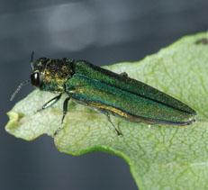
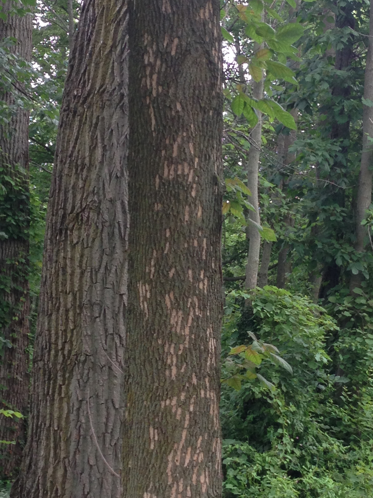

This is the Emerald Ash Borer. It is non-native to the U.S. and attacks ash trees.
This is what an infected ash tree looks like.

By identifying both healthy and infected trees, we can stop the spread of this disease and save our trees. Here's how.
Additional information: